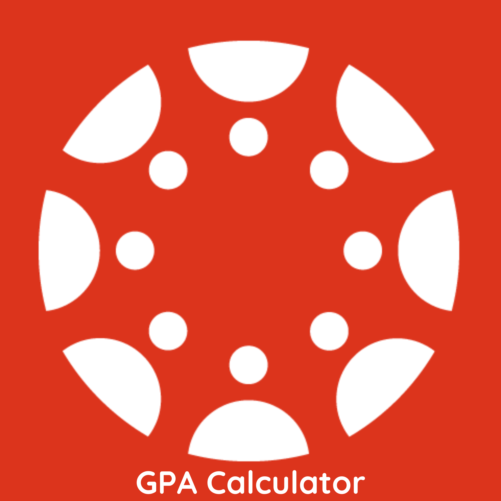

Canvas GPA Calculator

Effortlessly Track Your GPA on Canvas
Tired of manually calculating your Grade Point Average? The Canvas GPA Calculator is a sleek Chrome extension that integrates directly into your Canvas dashboard, showing your current GPA based on entered grades in real-time. Stay on top of your academic progress with zero extra effort.
Key Features
The Canvas GPA Calculator offers the following features:
- Individual course calculation based on published assignment grades (Regular and Weighted).
- Total GPA calculation.
- Compatibility with Better Canvas.
Support & Contribution
Encounter issues or have ideas for improvement? Check out the issues page on GitHub. Contributions are welcome!